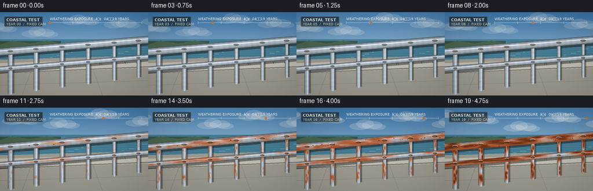
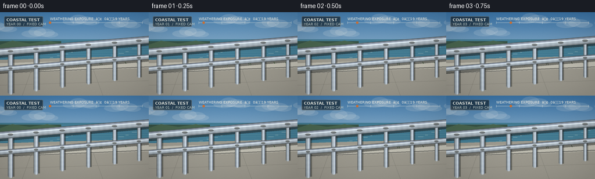

CODING AGENTS AS PIXEL WORLD MODELS
traex/GPT-5.6-Sol · phygen_159
点击播放 · 原生 RGB 像素
逐轮保存的候选
回放视频、检查图与代码变化。
每份候选均可单独播放。实际图片检查记录在下方工具轨迹中。
候选 01播放与检查图
点击播放 · 原生 RGB 像素

展开代码变化
--- 上一保存版本
+++ 本次保存版本
@@ -0,0 +1,255 @@
+from pathlib import Path
+import math
+import numpy as np
+from PIL import Image, ImageDraw, ImageFont, ImageFilter
+import artifact_io
+
+# Procedural fixed-camera documentary time lapse. Rendering is performed at 3x
+# and reduced for clean, photographic edges.
+W, H, N, SCALE = 256, 144, 20, 3
+RW, RH = W*SCALE, H*SCALE
+rng = np.random.default_rng(159)
+
+try:
+ FONT = ImageFont.truetype('/usr/share/fonts/truetype/dejavu/DejaVuSans.ttf', 6*SCALE)
+ FONT_B = ImageFont.truetype('/usr/share/fonts/truetype/dejavu/DejaVuSans-Bold.ttf', 7*SCALE)
+except Exception:
+ FONT = FONT_B = ImageFont.load_default()
+
+Y, X = np.mgrid[0:RH, 0:RW].astype(np.float32)
+LX, LY = X/SCALE, Y/SCALE
+
+# Persistent corrosion nuclei. Each rail has its own age of appearance and location.
+seed_cache = {}
+def corrosion_seeds(key, count):
+ if key not in seed_cache:
+ rr = np.random.default_rng(5000 + key*79)
+ seed_cache[key] = [(float(rr.uniform(.03,.97)), float(rr.uniform(-.78,.78)),
+ float(rr.uniform(.06,.58)), float(rr.uniform(.025,.075)),
+ float(rr.uniform(.16,.34))) for _ in range(count)]
+ return seed_cache[key]
+
+def gradient3(top, bottom, h=RH, w=RW):
+ f = np.linspace(0,1,h, dtype=np.float32)[:,None,None]
+ a=np.array(top,np.float32)[None,None,:]; b=np.array(bottom,np.float32)[None,None,:]
+ return np.broadcast_to(a*(1-f)+b*f,(h,w,3)).copy()
+
+def line_mask(draw, p1, p2, width, fill):
+ draw.line(tuple(int(v*SCALE) for v in (*p1,*p2)), fill=fill, width=max(1,int(width*SCALE)), joint='curve')
+
+def tube_layer(base, p1, p2, radius, age, key, seed_count=12):
+ """Render a cylindrical metal tube with stable corrosion that grows over years."""
+ x1,y1=p1; x2,y2=p2
+ vx=x2-x1; vy=y2-y1; ll=vx*vx+vy*vy
+ u=((LX-x1)*vx+(LY-y1)*vy)/ll
+ signed=((LX-x1)*(-vy)+(LY-y1)*vx)/math.sqrt(ll)
+ uc=np.clip(u,0,1)
+ cx=x1+uc*vx; cy=y1+uc*vy
+ dist=np.sqrt((LX-cx)**2+(LY-cy)**2)
+ mask=np.clip(radius+.8-dist,0,1)
+ cross=np.clip(signed/radius,-1,1)
+
+ # Brushed steel: a strong narrow specular streak and darker rounded edges.
+ edge=np.sqrt(np.clip(1-cross*cross,0,1))
+ highlight=np.exp(-((cross+.28)/.14)**2)
+ brushed=4*np.sin(uc*190 + key*1.7)+2*np.sin(uc*53+key)
+ dull=age*.36
+ metal=np.zeros((RH,RW,3),np.float32)
+ metal[:,:,0]=66 + 113*edge + 70*highlight + brushed - 28*dull
+ metal[:,:,1]=72 + 119*edge + 72*highlight + brushed - 30*dull
+ metal[:,:,2]=75 + 125*edge + 78*highlight + brushed - 32*dull
+ # cool sky glint along upper surface
+ metal[:,:,2] += 10*np.exp(-((cross+.64)/.20)**2)*(1-age*.55)
+
+ # Bloom fields have delayed onsets and expanding footprints.
+ rust=np.zeros((RH,RW),np.float32)
+ pit=np.zeros_like(rust)
+ for pos, side, onset, spread, strength in corrosion_seeds(key,seed_count):
+ progress=np.clip((age-onset)/(1-onset),0,1)
+ if progress<=0: continue
+ sig_u=spread*(.23+1.20*progress)
+ sig_c=.10+.42*progress
+ g=np.exp(-.5*((u-pos)/sig_u)**2 - .5*((cross-side)/sig_c)**2)
+ rust=np.maximum(rust,g*progress*(.78+strength))
+ pit=np.maximum(pit,g*(progress**1.7))
+ # preferential corrosion on the wet lower lip, becoming continuous late
+ lip=np.exp(-((cross-.76)/.24)**2)*np.clip((age-.32)/.68,0,1)*(.25+.18*np.sin(uc*67+key)**2)
+ rust=np.clip(rust+lip,0,1)
+ fine=(np.sin(LX*2.71+LY*.73+key)*np.sin(LY*3.17-LX*.31))*.5+.5
+ rust=np.clip(rust*(.78+.34*fine),0,1)
+
+ # layered ochre / oxide / black pits
+ orange=np.stack([150+54*fine, 52+38*fine, 17+12*fine],axis=2)
+ deep=np.stack([61+34*fine, 29+18*fine, 16+8*fine],axis=2)
+ oxide_mix=np.clip((rust-.18)*1.45,0,.86)[:,:,None]
+ metal=metal*(1-oxide_mix)+orange*oxide_mix
+ darkcore=np.clip((pit-.69)*2.5,0,.72)[:,:,None]
+ metal=metal*(1-darkcore)+deep*darkcore
+ # crumbly pale margins around established blooms
+ rim=np.clip((rust-.30)*6,0,1)*np.clip((.58-rust)*8,0,1)
+ metal += rim[:,:,None]*np.array([27,10,-6],np.float32)
+ metal=np.clip(metal,0,255)
+ a=mask[:,:,None]
+ base[:]=base*(1-a)+metal*a
+
+def draw_background(i):
+ age=i/(N-1)
+ season=math.sin(i*math.pi*.46)
+ cloudiness=.10+.24*age+.08*(math.sin(i*.67+1)**2)
+ top=(68+8*season,125+7*season,175+5*season)
+ bottom=(184-cloudiness*35,207-cloudiness*28,219-cloudiness*22)
+ arr=gradient3(top,bottom)
+ # gentle sky haze and photographic grain
+ haze=np.exp(-((LY-48)/19)**2)[:,:,None]
+ arr=arr*(1-.08*haze)+np.array([224,225,215])*haze*.08
+ im=Image.fromarray(np.uint8(np.clip(arr,0,255)),'RGB')
+ d=ImageDraw.Draw(im,'RGBA')
+
+ # Clouds drift consistently across the fixed camera.
+ for c in range(5):
+ cx=(-35 + c*71 + i*3.4) % 350 - 38
+ cy=13+(c%3)*9+4*math.sin(.24*i+c)
+ alpha=int(28+cloudiness*80)
+ for ox,oy,rx,ry in [(-14,3,18,6),(-5,-1,15,8),(7,1,18,7),(17,4,14,5)]:
+ d.ellipse(((cx+ox-rx)*SCALE,(cy+oy-ry)*SCALE,(cx+ox+rx)*SCALE,(cy+oy+ry)*SCALE),fill=(232,235,234,alpha))
+
+ # Distant sea and headland.
+ d.rectangle((0,47*SCALE,RW,83*SCALE),fill=(63,119,143,255))
+ # horizontal water bands and sparse highlights
+ for yy in range(49,83,3):
+ col=(101+yy%7,151+yy%9,165+yy%11,100)
+ d.line((0,yy*SCALE,RW,yy*SCALE),fill=col,width=1*SCALE)
+ for k in range(26):
+ xx=(k*47+i*1.7)%270-8; yy=52+(k*13)%27
+ ln=3+(k*11)%10
+ d.line((xx*SCALE,yy*SCALE,(xx+ln)*SCALE,yy*SCALE),fill=(215,225,214,75),width=1*SCALE)
+ d.polygon([(0,50*SCALE),(0,75*SCALE),(47*SCALE,69*SCALE),(84*SCALE,60*SCALE),(105*SCALE,59*SCALE),(105*SCALE,50*SCALE)],fill=(55,83,71,255))
+ d.polygon([(0,56*SCALE),(21*SCALE,49*SCALE),(51*SCALE,54*SCALE),(81*SCALE,49*SCALE),(106*SCALE,54*SCALE),(106*SCALE,63*SCALE),(0,73*SCALE)],fill=(73,101,79,255))
+
+ # Terrace paving and seawall, fixed geometry.
+ d.polygon([(0,82*SCALE),(RW,75*SCALE),(RW,RH),(0,RH)],fill=(157,154,143,255))
+ d.polygon([(0,88*SCALE),(RW,80*SCALE),(RW,96*SCALE),(0,106*SCALE)],fill=(192,190,178,255))
+ d.line((0,105*SCALE,RW,94*SCALE),fill=(90,89,84,180),width=2*SCALE)
+ # paving seams and stains
+ d.line((53*SCALE,102*SCALE,38*SCALE,RH),fill=(118,116,108,100),width=SCALE)
+ d.line((160*SCALE,98*SCALE,177*SCALE,RH),fill=(118,116,108,90),width=SCALE)
+ d.line((0,126*SCALE,RW,118*SCALE),fill=(120,117,108,100),width=SCALE)
+ # small tufts along edge increasing slightly over long exposure
+ for k in range(18):
+ bx=(k*41+17)%268-5; by=98-.043*bx
+ growth=.25+.65*age
+ col=(57,87+int(18*season),48,160)
+ d.line((bx*SCALE,by*SCALE,(bx+math.sin(k)*2)*SCALE,(by-3*growth-(k%3))*SCALE),fill=col,width=SCALE)
+ return np.asarray(im).astype(np.float32)
+
+def rail_geometry():
+ top=((-18,70),(274,46),6.2,101)
+ lower=((-12,99),(267,76),4.0,102)
+ posts=[]
+ for j,x in enumerate([18,62,107,152,197,239]):
+ yt=68.52-.0822*x
+ yb=140-.125*x
+ rad=4.3-.0065*x
+ posts.append(((x,yt),(x,yb),rad,110+j))
+ return top,lower,posts
+
+def rail_rust_streaks(im, age):
+ # translucent rust runoff painted behind the rail onto the tubes and concrete.
+ lay=Image.new('RGBA',(RW,RH),(0,0,0,0)); d=ImageDraw.Draw(lay,'RGBA')
+ for k,x in enumerate([17,61,106,151,196,238]):
+ onset=.26+(k%3)*.06
+ p=max(0,(age-onset)/(1-onset))
+ if p<=0: continue
+ y=70-.082*x
+ length=(13+19*((k*7)%5)/4)*p
+ wav=math.sin(k*2.4)*1.1
+ d.line((x*SCALE,(y+6)*SCALE,(x+wav)*SCALE,(y+6+length)*SCALE),fill=(133,53,18,int(80*p)),width=max(1,int((.5+1.1*p)*SCALE)))
+ d.line(((x+2)*SCALE,(y+7)*SCALE,(x+1+wav)*SCALE,(y+5+length*.75)*SCALE),fill=(211,103,36,int(50*p)),width=SCALE)
+ rgba=Image.fromarray(np.uint8(im),'RGB').convert('RGBA')
+ return np.asarray(Image.alpha_composite(rgba,lay).convert('RGB')).astype(np.float32)
+
+def draw_details(arr,i):
+ age=i/(N-1)
+ im=Image.fromarray(np.uint8(np.clip(arr,0,255)),'RGB')
+ d=ImageDraw.Draw(im,'RGBA')
+ top,lower,posts=rail_geometry()
+ # contact shadows establish rail depth
+ for p1,p2,r,key in posts:
+ line_mask(d,(p1[0]+2,p1[1]+2),(p2[0]+2,p2[1]+2),r*2+1,(31,34,32,105))
+ line_mask(d,(lower[0][0]+2,lower[0][1]+3),(lower[1][0]+2,lower[1][1]+3),lower[2]*2+2,(27,29,28,120))
+ line_mask(d,(top[0][0]+2,top[0][1]+3),(top[1][0]+2,top[1][1]+3),top[2]*2+2,(28,29,28,135))
+ arr=np.asarray(im).astype(np.float32)
+ arr=rail_rust_streaks(arr,age)
+
+ # back-to-front construction: uprights, secondary rail, prominent handrail.
+ for p1,p2,r,key in posts:
+ tube_layer(arr,p1,p2,r,age,key,9)
+ tube_layer(arr,lower[0],lower[1],lower[2],age,lower[3],15)
+ tube_layer(arr,top[0],top[1],top[2],age,top[3],21)
+
+ # Weld collars, oxidized bolts, pits, and late flaking edges.
+ im=Image.fromarray(np.uint8(np.clip(arr,0,255)),'RGB')
+ d=ImageDraw.Draw(im,'RGBA')
+ for j,x in enumerate([18,62,107,152,197,239]):
+ yt=68.52-.0822*x; ylow=98.0-.0824*x
+ cor=np.clip((age-(.18+.035*(j%4)))/.72,0,1)
+ for yy,rr in [(yt,4.8),(ylow,3.6)]:
+ # dark undershadow / bright top of welded ring
+ d.ellipse(((x-rr)*SCALE,(yy-1.55)*SCALE,(x+rr)*SCALE,(yy+2.2)*SCALE),fill=(48,48,43,130))
+ d.arc(((x-rr)*SCALE,(yy-2.3)*SCALE,(x+rr)*SCALE,(yy+1.1)*SCALE),185,350,fill=(231,238,235,180),width=SCALE)
+ if cor>0:
+ d.arc(((x-rr)*SCALE,(yy-2)*SCALE,(x+rr)*SCALE,(yy+2)*SCALE),5,165,fill=(176,69,21,int(210*cor)),width=max(SCALE,int(1.2*SCALE)))
+ d.ellipse(((x+rr*.3)*SCALE,(yy+.2)*SCALE,(x+rr*.8)*SCALE,(yy+1.5)*SCALE),fill=(83,35,20,int(180*cor)))
+ # Persistent, progressively revealed pinhole map on the main handrail.
+ rr=np.random.default_rng(991)
+ for k in range(34):
+ onset=.36+rr.random()*.55
+ p=np.clip((age-onset)/.12,0,1)
+ if p<=0: continue
+ x=float(rr.uniform(3,253)); center=68.52-.0822*x
+ y=center+float(rr.uniform(-3.7,3.7)); r=float(rr.uniform(.35,1.0))
+ d.ellipse(((x-r)*SCALE,(y-r*.62)*SCALE,(x+r)*SCALE,(y+r*.62)*SCALE),fill=(42,27,20,int(210*p)))
+ d.arc(((x-r*1.5)*SCALE,(y-r)*SCALE,(x+r*1.5)*SCALE,(y+r)*SCALE),190,340,fill=(232,113,40,int(190*p)),width=SCALE)
+ # A few hanging oxide flakes in the latest years (still attached, no implausible collapse).
+ late=np.clip((age-.74)/.26,0,1)
+ if late>0:
+ for k,x in enumerate([48,94,174,222]):
+ y=68.52-.0822*x+5.5
+ sz=(1.3+(k%2)*.7)*late
+ d.polygon([(x*SCALE,y*SCALE),((x+sz)*SCALE,(y+2.5*late)*SCALE),((x-.7*sz)*SCALE,(y+1.8*late)*SCALE)],fill=(113,42,18,int(230*late)))
+
+ # restrained documentary date slate and exposure timeline.
+ d.rounded_rectangle((7*SCALE,7*SCALE,74*SCALE,25*SCALE),radius=2*SCALE,fill=(8,14,16,145),outline=(235,238,231,70),width=SCALE)
+ d.text((11*SCALE,9*SCALE),'COASTAL TEST',font=FONT_B,fill=(240,242,235,230))
+ d.text((11*SCALE,17*SCALE),f'YEAR {i:02d} / FIXED CAM',font=FONT,fill=(197,211,207,225))
+ # small timeline with advancing amber marker
+ d.line((86*SCALE,18*SCALE,245*SCALE,18*SCALE),fill=(240,243,234,110),width=SCALE)
+ for q in range(5):
+ xx=(86+q*39.75)*SCALE
+ d.line((xx,16*SCALE,xx,20*SCALE),fill=(240,243,234,100),width=SCALE)
+ mx=(86+159*age)*SCALE
+ d.ellipse((mx-2*SCALE,16*SCALE,mx+2*SCALE,20*SCALE),fill=(220,113,42,235))
+ d.text((86*SCALE,8*SCALE),'WEATHERING EXPOSURE ⢠0â19 YEARS',font=FONT,fill=(241,242,234,205))
+ return im
+
+def make_frame(i):
+ arr=draw_background(i)
+ im=draw_details(arr,i)
+ # Mild vignette and deterministic film grain unify layers without temporal flicker.
+ a=np.asarray(im).astype(np.float32)
+ yy,xx=np.mgrid[0:RH,0:RW]
+ vx=(xx-RW/2)/(RW/2); vy=(yy-RH/2)/(RH/2)
+ vig=np.clip(1-.08*(vx*vx+vy*vy),.86,1)[:,:,None]
+ a*=vig
+ noise=np.random.default_rng(240+i).normal(0,1.15,(RH,RW,1))
+ a=np.clip(a+noise,0,255).astype(np.uint8)
+ return np.asarray(Image.fromarray(a).resize((W,H),Image.Resampling.LANCZOS),dtype=np.uint8)
+
+def main():
+ frames=np.stack([make_frame(i) for i in range(N)])
+ assert frames.shape==(20,144,256,3) and frames.dtype==np.uint8
+ artifact_io.save(frames,Path(__file__).resolve().parent)
+ print('saved',frames.shape,frames.dtype,'range',int(frames.min()),int(frames.max()))
+
+if __name__=='__main__':
+ main()
候选 02播放与检查图
点击播放 · 原生 RGB 像素


展开代码变化
--- 上一保存版本
+++ 本次保存版本
@@ -102,7 +102,7 @@
# gentle sky haze and photographic grain
haze=np.exp(-((LY-48)/19)**2)[:,:,None]
arr=arr*(1-.08*haze)+np.array([224,225,215])*haze*.08
- im=Image.fromarray(np.uint8(np.clip(arr,0,255)),'RGB')
+ im=Image.fromarray(np.uint8(np.clip(arr,0,255)))
d=ImageDraw.Draw(im,'RGBA')
# Clouds drift consistently across the fixed camera.
@@ -165,12 +165,12 @@
wav=math.sin(k*2.4)*1.1
d.line((x*SCALE,(y+6)*SCALE,(x+wav)*SCALE,(y+6+length)*SCALE),fill=(133,53,18,int(80*p)),width=max(1,int((.5+1.1*p)*SCALE)))
d.line(((x+2)*SCALE,(y+7)*SCALE,(x+1+wav)*SCALE,(y+5+length*.75)*SCALE),fill=(211,103,36,int(50*p)),width=SCALE)
- rgba=Image.fromarray(np.uint8(im),'RGB').convert('RGBA')
+ rgba=Image.fromarray(np.uint8(im)).convert('RGBA')
return np.asarray(Image.alpha_composite(rgba,lay).convert('RGB')).astype(np.float32)
def draw_details(arr,i):
age=i/(N-1)
- im=Image.fromarray(np.uint8(np.clip(arr,0,255)),'RGB')
+ im=Image.fromarray(np.uint8(np.clip(arr,0,255)))
d=ImageDraw.Draw(im,'RGBA')
top,lower,posts=rail_geometry()
# contact shadows establish rail depth
@@ -188,7 +188,7 @@
tube_layer(arr,top[0],top[1],top[2],age,top[3],21)
# Weld collars, oxidized bolts, pits, and late flaking edges.
- im=Image.fromarray(np.uint8(np.clip(arr,0,255)),'RGB')
+ im=Image.fromarray(np.uint8(np.clip(arr,0,255)))
d=ImageDraw.Draw(im,'RGBA')
for j,x in enumerate([18,62,107,152,197,239]):
yt=68.52-.0822*x; ylow=98.0-.0824*x
可观测工具轨迹
实际执行的命令与返回图片。
命令 1exit 0
/bin/bash -lc "cat prompt.txt && printf '\\n--- GENERATION_RULES.md ---\\n' && cat GENERATION_RULES.md && printf '\\n--- task_spec.json ---\\n' && cat task_spec.json"
命令 2exit 1
/bin/bash -lc "find . -maxdepth 2 -type f -printf '%p\\n' | sort && printf '\\nTools:\\n' && command -v ffmpeg && command -v python3 && python3 - <<'PY'
try:
import cv2; print('cv2',cv2.__version__)
except Exception as e: print('no cv2',e)
try:
import PIL; print('PIL',PIL.__version__)
except Exception as e: print('no PIL',e)
try:
import numpy; print('numpy',numpy.__version__)
except Exception as e: print('no numpy',e)
PY"命令 3exit 0
/bin/bash -lc "cat artifact_io.py; printf '\\nBinaries:\\n'; command -v python3 || true; command -v ffmpeg || true; command -v convert || true; python3 - <<'PY' for m in ['numpy','PIL','cv2','imageio']: try: x=__import__(m); print(m,getattr(x,'__version__','ok')) except Exception as e: print(m,'ERR',e) PY"
命令 4exit 0
/bin/bash -lc "cat > generate.py <<'PY'
from pathlib import Path
import math
import numpy as np
from PIL import Image, ImageDraw, ImageFont, ImageFilter
import artifact_io
# Procedural fixed-camera documentary time lapse. Rendering is performed at 3x
# and reduced for clean, photographic edges.
W, H, N, SCALE = 256, 144, 20, 3
RW, RH = W*SCALE, H*SCALE
rng = np.random.default_rng(159)
try:
FONT = ImageFont.truetype('/usr/share/fonts/truetype/dejavu/DejaVuSans.ttf', 6*SCALE)
FONT_B = ImageFont.truetype('/usr/share/fonts/truetype/dejavu/DejaVuSans-Bold.ttf', 7*SCALE)
except Exception:
FONT = FONT_B = ImageFont.load_default()
Y, X = np.mgrid[0:RH, 0:RW].astype(np.float32)
LX, LY = X/SCALE, Y/SCALE
# Persistent corrosion nuclei. Each rail has its own age of appearance and location.
seed_cache = {}
def corrosion_seeds(key, count):
if key not in seed_cache:
rr = np.random.default_rng(5000 + key*79)
seed_cache[key] = [(float(rr.uniform(.03,.97)), float(rr.uniform(-.78,.78)),
float(rr.uniform(.06,.58)), float(rr.uniform(.025,.075)),
float(rr.uniform(.16,.34))) for _ in range(count)]
return seed_cache[key]
def gradient3(top, bottom, h=RH, w=RW):
f = np.linspace(0,1,h, dtype=np.float32)[:,None,None]
a=np.array(top,np.float32)[None,None,:]; b=np.array(bottom,np.float32)[None,None,:]
return np.broadcast_to(a*(1-f)+b*f,(h,w,3)).copy()
def line_mask(draw, p1, p2, width, fill):
draw.line(tuple(int(v*SCALE) for v in (*p1,*p2)), fill=fill, width=max(1,int(width*SCALE)), joint='curve')
def tube_layer(base, p1, p2, radius, age, key, seed_count=12):
\"\"\"Render a cylindrical metal tube with stable corrosion that grows over years.\"\"\"
x1,y1=p1; x2,y2=p2
vx=x2-x1; vy=y2-y1; ll=vx*vx+vy*vy
u=((LX-x1)*vx+(LY-y1)*vy)/ll
signed=((LX-x1)*(-vy)+(LY-y1)*vx)/math.sqrt(ll)
uc=np.clip(u,0,1)
cx=x1+uc*vx; cy=y1+uc*vy
dist=np.sqrt((LX-cx)**2+(LY-cy)**2)
mask=np.clip(radius+.8-dist,0,1)
cross=np.clip(signed/radius,-1,1)
# Brushed steel: a strong narrow specular streak and darker rounded edges.
edge=np.sqrt(np.clip(1-cross*cross,0,1))
highlight=np.exp(-((cross+.28)/.14)**2)
brushed=4*np.sin(uc*190 + key*1.7)+2*np.sin(uc*53+key)
dull=age*.36
metal=np.zeros((RH,RW,3),np.float32)
metal[:,:,0]=66 + 113*edge + 70*highlight + brushed - 28*dull
metal[:,:,1]=72 + 119*edge + 72*highlight + brushed - 30*dull
metal[:,:,2]=75 + 125*edge + 78*highlight + brushed - 32*dull
# cool sky glint along upper surface
metal[:,:,2] += 10*np.exp(-((cross+.64)/.20)**2)*(1-age*.55)
# Bloom fields have delayed onsets and expanding footprints.
rust=np.zeros((RH,RW),np.float32)
pit=np.zeros_like(rust)
for pos, side, onset, spread, strength in corrosion_seeds(key,seed_count):
progress=np.clip((age-onset)/(1-onset),0,1)
if progress<=0: continue
sig_u=spread*(.23+1.20*progress)
sig_c=.10+.42*progress
g=np.exp(-.5*((u-pos)/sig_u)**2 - .5*((cross-side)/sig_c)**2)
rust=np.maximum(rust,g*progress*(.78+strength))
pit=np.maximum(pit,g*(progress**1.7))
# preferential corrosion on the wet lower lip, becoming continuous late
lip=np.exp(-((cross-.76)/.24)**2)*np.clip((age-.32)/.68,0,1)*(.25+.18*np.sin(uc*67+key)**2)
rust=np.clip(rust+lip,0,1)
fine=(np.sin(LX*2.71+LY*.73+key)*np.sin(LY*3.17-LX*.31))*.5+.5
rust=np.clip(rust*(.78+.34*fine),0,1)
# layered ochre / oxide / black pits
orange=np.stack([150+54*fine, 52+38*fine, 17+12*fine],axis=2)
deep=np.stack([61+34*fine, 29+18*fine, 16+8*fine],axis=2)
oxide_mix=np.clip((rust-.18)*1.45,0,.86)[:,:,None]
metal=metal*(1-oxide_mix)+orange*oxide_mix
darkcore=np.clip((pit-.69)*2.5,0,.72)[:,:,None]
metal=metal*(1-darkcore)+deep*darkcore
# crumbly pale margins around established blooms
rim=np.clip((rust-.30)*6,0,1)*np.clip((.58-rust)*8,0,1)
metal += rim[:,:,None]*np.array([27,10,-6],np.float32)
metal=np.clip(metal,0,255)
a=mask[:,:,None]
base[:]=base*(1-a)+metal*a
def draw_background(i):
age=i/(N-1)
season=math.sin(i*math.pi*.46)
cloudiness=.10+.24*age+.08*(math.sin(i*.67+1)**2)
top=(68+8*season,125+7*season,175+5*season)
bottom=(184-cloudiness*35,207-cloudiness*28,219-cloudiness*22)
arr=gradient3(top,bottom)
# gentle sky haze and photographic grain
haze=np.exp(-((LY-48)/19)**2)[:,:,None]
arr=arr*(1-.08*haze)+np.array([224,225,215])*haze*.08
im=Image.fromarray(np.uint8(np.clip(arr,0,255)),'RGB')
d=ImageDraw.Draw(im,'RGBA')
# Clouds drift consistently across the fixed camera.
for c in range(5):
cx=(-35 + c*71 + i*3.4) % 350 - 38
cy=13+(c%3)*9+4*math.sin(.24*i+c)
alpha=int(28+cloudiness*80)
for ox,oy,rx,ry in [(-14,3,18,6),(-5,-1,15,8),(7,1,18,7),(17,4,14,5)]:
d.ellipse(((cx+ox-rx)*SCALE,(cy+oy-ry)*SCALE,(cx+ox+rx)*SCALE,(cy+oy+ry)*SCALE),fill=(232,235,234,alpha))
# Distant sea and headland.
d.rectangle((0,47*SCALE,RW,83*SCALE),fill=(63,119,143,255))
# horizontal water bands and sparse highlights
for yy in range(49,83,3):
col=(101+yy%7,151+yy%9,165+yy%11,100)
d.line((0,yy*SCALE,RW,yy*SCALE),fill=col,width=1*SCALE)
for k in range(26):
xx=(k*47+i*1.7)%270-8; yy=52+(k*13)%27
ln=3+(k*11)%10
d.line((xx*SCALE,yy*SCALE,(xx+ln)*SCALE,yy*SCALE),fill=(215,225,214,75),width=1*SCALE)
d.polygon([(0,50*SCALE),(0,75*SCALE),(47*SCALE,69*SCALE),(84*SCALE,60*SCALE),(105*SCALE,59*SCALE),(105*SCALE,50*SCALE)],fill=(55,83,71,255))
d.polygon([(0,56*SCALE),(21*SCALE,49*SCALE),(51*SCALE,54*SCALE),(81*SCALE,49*SCALE),(106*SCALE,54*SCALE),(106*SCALE,63*SCALE),(0,73*SCALE)],fill=(73,101,79,255))
# Terrace paving and seawall, fixed geometry.
d.polygon([(0,82*SCALE),(RW,75*SCALE),(RW,RH),(0,RH)],fill=(157,154,143,255))
d.polygon([(0,88*SCALE),(RW,80*SCALE),(RW,96*SCALE),(0,106*SCALE)],fill=(192,190,178,255))
d.line((0,105*SCALE,RW,94*SCALE),fill=(90,89,84,180),width=2*SCALE)
# paving seams and stains
d.line((53*SCALE,102*SCALE,38*SCALE,RH),fill=(118,116,108,100),width=SCALE)
d.line((160*SCALE,98*SCALE,177*SCALE,RH),fill=(118,116,108,90),width=SCALE)
d.line((0,126*SCALE,RW,118*SCALE),fill=(120,117,108,100),width=SCALE)
# small tufts along edge increasing slightly over long exposure
for k in range(18):
bx=(k*41+17)%268-5; by=98-.043*bx
growth=.25+.65*age
col=(57,87+int(18*season),48,160)
d.line((bx*SCALE,by*SCALE,(bx+math.sin(k)*2)*SCALE,(by-3*growth-(k%3))*SCALE),fill=col,width=SCALE)
return np.asarray(im).astype(np.float32)
def rail_geometry():
top=((-18,70),(274,46),6.2,101)
lower=((-12,99),(267,76),4.0,102)
posts=[]
for j,x in enumerate([18,62,107,152,197,239]):
yt=68.52-.0822*x
yb=140-.125*x
rad=4.3-.0065*x
posts.append(((x,yt),(x,yb),rad,110+j))
return top,lower,posts
def rail_rust_streaks(im, age):
# translucent rust runoff painted behind the rail onto the tubes and concrete.
lay=Image.new('RGBA',(RW,RH),(0,0,0,0)); d=ImageDraw.Draw(lay,'RGBA')
for k,x in enumerate([17,61,106,151,196,238]):
onset=.26+(k%3)*.06
p=max(0,(age-onset)/(1-onset))
if p<=0: continue
y=70-.082*x
length=(13+19*((k*7)%5)/4)*p
wav=math.sin(k*2.4)*1.1
d.line((x*SCALE,(y+6)*SCALE,(x+wav)*SCALE,(y+6+length)*SCALE),fill=(133,53,18,int(80*p)),width=max(1,int((.5+1.1*p)*SCALE)))
d.line(((x+2)*SCALE,(y+7)*SCALE,(x+1+wav)*SCALE,(y+5+length*.75)*SCALE),fill=(211,103,36,int(50*p)),width=SCALE)
rgba=Image.fromarray(np.uint8(im),'RGB').convert('RGBA')
return np.asarray(Image.alpha_composite(rgba,lay).convert('RGB')).astype(np.float32)
def draw_details(arr,i):
age=i/(N-1)
im=Image.fromarray(np.uint8(np.clip(arr,0,255)),'RGB')
d=ImageDraw.Draw(im,'RGBA')
top,lower,posts=rail_geometry()
# contact shadows establish rail depth
for p1,p2,r,key in posts:
line_mask(d,(p1[0]+2,p1[1]+2),(p2[0]+2,p2[1]+2),r*2+1,(31,34,32,105))
line_mask(d,(lower[0][0]+2,lower[0][1]+3),(lower[1][0]+2,lower[1][1]+3),lower[2]*2+2,(27,29,28,120))
line_mask(d,(top[0][0]+2,top[0][1]+3),(top[1][0]+2,top[1][1]+3),top[2]*2+2,(28,29,28,135))
arr=np.asarray(im).astype(np.float32)
arr=rail_rust_streaks(arr,age)
# back-to-front construction: uprights, secondary rail, prominent handrail.
for p1,p2,r,key in posts:
tube_layer(arr,p1,p2,r,age,key,9)
tube_layer(arr,lower[0],lower[1],lower[2],age,lower[3],15)
tube_layer(arr,top[0],top[1],top[2],age,top[3],21)
# Weld collars, oxidized bolts, pits, and late flaking edges.
im=Image.fromarray(np.uint8(np.clip(arr,0,255)),'RGB')
d=ImageDraw.Draw(im,'RGBA')
for j,x in enumerate([18,62,107,152,197,239]):
yt=68.52-.0822*x; ylow=98.0-.0824*x
cor=np.clip((age-(.18+.035*(j%4)))/.72,0,1)
for yy,rr in [(yt,4.8),(ylow,3.6)]:
# dark undershadow / bright top of welded ring
d.ellipse(((x-rr)*SCALE,(yy-1.55)*SCALE,(x+rr)*SCALE,(yy+2.2)*SCALE),fill=(48,48,43,130))
d.arc(((x-rr)*SCALE,(yy-2.3)*SCALE,(x+rr)*SCALE,(yy+1.1)*SCALE),185,350,fill=(231,238,235,180),width=SCALE)
if cor>0:
d.arc(((x-rr)*SCALE,(yy-2)*SCALE,(x+rr)*SCALE,(yy+2)*SCALE),5,165,fill=(176,69,21,int(210*cor)),width=max(SCALE,int(1.2*SCALE)))
d.ellipse(((x+rr*.3)*SCALE,(yy+.2)*SCALE,(x+rr*.8)*SCALE,(yy+1.5)*SCALE),fill=(83,35,20,int(180*cor)))
# Persistent, progressively revealed pinhole map on the main handrail.
rr=np.random.default_rng(991)
for k in range(34):
onset=.36+rr.random()*.55
p=np.clip((age-onset)/.12,0,1)
if p<=0: continue
x=float(rr.uniform(3,253)); center=68.52-.0822*x
y=center+float(rr.uniform(-3.7,3.7)); r=float(rr.uniform(.35,1.0))
d.ellipse(((x-r)*SCALE,(y-r*.62)*SCALE,(x+r)*SCALE,(y+r*.62)*SCALE),fill=(42,27,20,int(210*p)))
d.arc(((x-r*1.5)*SCALE,(y-r)*SCALE,(x+r*1.5)*SCALE,(y+r)*SCALE),190,340,fill=(232,113,40,int(190*p)),width=SCALE)
# A few hanging oxide flakes in the latest years (still attached, no implausible collapse).
late=np.clip((age-.74)/.26,0,1)
if late>0:
for k,x in enumerate([48,94,174,222]):
y=68.52-.0822*x+5.5
sz=(1.3+(k%2)*.7)*late
d.polygon([(x*SCALE,y*SCALE),((x+sz)*SCALE,(y+2.5*late)*SCALE),((x-.7*sz)*SCALE,(y+1.8*late)*SCALE)],fill=(113,42,18,int(230*late)))
# restrained documentary date slate and exposure timeline.
d.rounded_rectangle((7*SCALE,7*SCALE,74*SCALE,25*SCALE),radius=2*SCALE,fill=(8,14,16,145),outline=(235,238,231,70),width=SCALE)
d.text((11*SCALE,9*SCALE),'COASTAL TEST',font=FONT_B,fill=(240,242,235,230))
d.text((11*SCALE,17*SCALE),f'YEAR {i:02d} / FIXED CAM',font=FONT,fill=(197,211,207,225))
# small timeline with advancing amber marker
d.line((86*SCALE,18*SCALE,245*SCALE,18*SCALE),fill=(240,243,234,110),width=SCALE)
for q in range(5):
xx=(86+q*39.75)*SCALE
d.line((xx,16*SCALE,xx,20*SCALE),fill=(240,243,234,100),width=SCALE)
mx=(86+159*age)*SCALE
d.ellipse((mx-2*SCALE,16*SCALE,mx+2*SCALE,20*SCALE),fill=(220,113,42,235))
d.text((86*SCALE,8*SCALE),'WEATHERING EXPOSURE ⢠0â19 YEARS',font=FONT,fill=(241,242,234,205))
return im
def make_frame(i):
arr=draw_background(i)
im=draw_details(arr,i)
# Mild vignette and deterministic film grain unify layers without temporal flicker.
a=np.asarray(im).astype(np.float32)
yy,xx=np.mgrid[0:RH,0:RW]
vx=(xx-RW/2)/(RW/2); vy=(yy-RH/2)/(RH/2)
vig=np.clip(1-.08*(vx*vx+vy*vy),.86,1)[:,:,None]
a*=vig
noise=np.random.default_rng(240+i).normal(0,1.15,(RH,RW,1))
a=np.clip(a+noise,0,255).astype(np.uint8)
return np.asarray(Image.fromarray(a).resize((W,H),Image.Resampling.LANCZOS),dtype=np.uint8)
def main():
frames=np.stack([make_frame(i) for i in range(N)])
assert frames.shape==(20,144,256,3) and frames.dtype==np.uint8
artifact_io.save(frames,Path(__file__).resolve().parent)
print('saved',frames.shape,frames.dtype,'range',int(frames.min()),int(frames.max()))
if __name__=='__main__':
main()
PY
python3 generate.py
ls -lh pixels.npz inspection.png transition_check.png index.html frames/00.png frames/19.png"命令 5exit 0
/bin/bash -lc "python3 - <<'PY'
p='generate.py'
s=open(p).read()
s=s.replace(\"'WEATHERING EXPOSURE ⢠0âÂÂ19 YEARS'\", \"'WEATHERING EXPOSURE | 0-19 YEARS'\")
s=s.replace(\"Image.fromarray(np.uint8(np.clip(arr,0,255)),'RGB')\", \"Image.fromarray(np.uint8(np.clip(arr,0,255)))\")
s=s.replace(\"Image.fromarray(np.uint8(im),'RGB')\", \"Image.fromarray(np.uint8(im))\")
open(p,'w').write(s)
PY
python3 generate.py
python3 - <<'PY'
import numpy as np
from PIL import Image
from pathlib import Path
z=np.load('pixels.npz')['pixels']
print('packed tensor:',z.shape,z.dtype)
imgs=[np.array(Image.open(f'frames/{i:02}.png')) for i in range(20)]
for i,a in enumerate(imgs): assert a.shape==(144,256,3) and a.dtype==np.uint8
# Report evolution specifically around the two rails / posts, excluding sky slate.
r=np.stack(imgs)[:,43:108]
oxide=((r[...,0] > r[...,1]*1.35) & (r[...,0] > r[...,2]*1.65) & (r[...,0]>75))
print('oxide pixels first/mid/last:',*[int(oxide[i].sum()) for i in (0,5,10,15,19)])
print('adjacent frame mean abs deltas:',[round(float(np.abs(np.int16(imgs[i])-np.int16(imgs[i-1])).mean()),2) for i in range(1,20)])
print('all artifacts:', all(Path(x).exists() for x in ['pixels.npz','index.html','inspection.png','transition_check.png']))
PY"保存候选 2 份；完成命令 5 次；可验证图片返回 0 张。原始 API 响应与完整日志保留在本地。